创造力与智力
在人类历史的长河中，创造力与有创造力的人总会得到人们的尊敬与仰慕。这些人似乎有能力始终保持孩童般的好奇，然后在创造的过程中感到快乐、享受，进而变得更具创造力。
他们是怎么做到的呢？我们怎样才能变得更有创造力呢？他们的人生就是这个问题的最佳答案。
伟大的科学家、艺术家与思想家都具有昂扬的斗志，敢于挑战已有的假设，认识潜藏的模式，懂得用全新的眼光观察世界，建立新的联系，以及善于把握机会。
如果没有创造力，人类可能仍然保持着旧石器时代的生活状态。创造力是人类思考与前进最有力的模式。我们都要运用创造力来享受和理解我们的生活，建造我们的世界。
在这个世界上，并不存在什么创造力的配方。我们也很难定义创造力。创造力并不单纯是产生新想法的过程。创造力其实代表着一种完全不同的思维方式，涉及事物的基本关系、安排以及联系。
诚然，一个具有创造性的大脑建立的联系越多，就能找到越多的道路，来得到一个独一无二且让人满意的解答。心理学家爱德华·德·博诺将这样的思维模式称为横向思维。无论是在那些先驱科学家，还是在艺术家或其他远见卓识者身上，我们都能够看到这种思维模式。
进行“盒子外思考”的能力，以不同方式进行思考的能力，用一种新颖的、非常规的方式去看问题的能力，是当代社会所急需的能力。现在我们已经进入了一个创造力变得越来越重要的新时代。
但即便如此，这些具有创造力的人也并不是天生就具有特殊的天赋。每个孩子在5岁之前，都是创造性的思考者，有着永不满足的好奇心。之后，随着年龄逐渐增长，我们就开始有了“心灵的障碍”，让我们无法看清楚问题的本质，甚至看不到最显而易见的解答。我们每个人都拥有创造力的潜能，只是在绝大多数时候我们都没有创造性地思考问题。
我找到了！
创造力始于创造性思维加上专业的技能。路易斯·巴斯德曾说：“机会只青睐那些有准备的大脑。”创造力的第二个要素就是想象性思维能力。在创造性思维冒出来的那个时刻，我们能用全新的眼光去看待事情，识别模式，发现事物之间新的联系——这就是那个“我找到了！”的时刻。
创造力的第三个要素就是敢于冒险的个性，始终寻找新的经验，然后就是靠内在的驱动，不断推进。理想的情况是还有一个创造性的环境激励这一切。
绝大多数人在成长过程中都会形成这样一个概念，那就是人的智力是通过测验来证明的：那些能够回答最多问题的人就被认为是最聪明的人。但是，想象一下，将智力简单地归纳为一个数字，也就是智商，本身就是一个过时陈旧的观念。人们试图参考智商来发展创意商数（Creativity Quotient）这个概念，却无法取得成功。早期的观念里还存在着另一个问题，那就是认为智力在每个人出生的时候就注定了。最近有很多研究表明，通过适当的训练，人的智商可以得到极大的提升。伯纳德·德夫林就得出了一个结论：就一个人的智商而言，基因的影响只占到48%，而胎教、后天的环境以及教育的影响则占到了52%。
如果你发现自己无法解答书中的一些谜题，千万不要认为自己不够“聪明”。你只不过需要释放你内在的创造力。只要有正确的思维模式，任何人都能解答这些谜题。
如果你认为书中的谜题很简单，那么就恭喜你了！
——爱德华·德·博诺，心理学家
小钉板的正方形
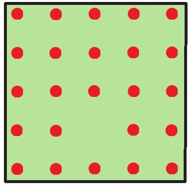
沿着小钉板的四个钉子拉伸橡皮筋，可以形成多少个大小不同的正方形呢？
相亲问题
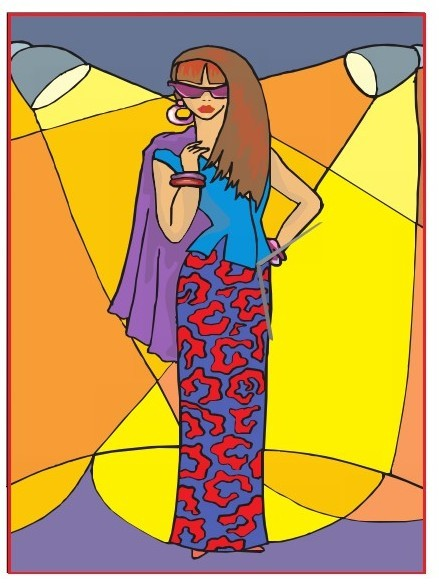
婚介网站为你安排了一次相亲。相亲的女方会拿着这本书等待你的出现。当你来到相亲的地方，你看到朱莉娅·罗伯茨拿着这本书。你觉得问题出在哪里呢？
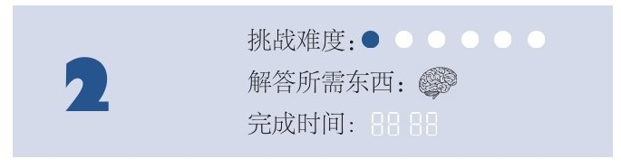
创造力与解决问题
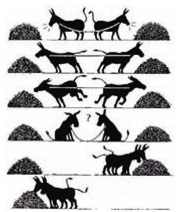
求解的过程会让我们对大脑运作的方式有所了解。思考是一件很困难的事，因此人类会尽可能减少思考的工作。比如“打了就跑”式的问题解决法，就是找到脑海里冒出来的第一个解决办法，然后照此执行。
你的潜意识里存储着你过去所有的人生经验、信念、记忆、技能，经历过的一切情景以及看到过的一切画面。是时候将意识从解决问题的宝座上请下去了。创造力的真正力量在你的潜意识里。现代认知科学已经揭示和证明，我们的大脑有很大一部分是在无意识地运转的，这一点就连弗洛伊德都没有怀疑过。很多信息处理过程都是在意识的层面之下进行的——在幕后，在我们看不到的地方。潜意识能够滋养我们的洞察力、创造力与直觉。潜意识的过程是迅速、自动且毫不费力的。而我们的意识则是深思熟虑、有序与理性的，需要我们付出努力才能完成。阿莫斯·特维斯基（Amos Tversky）与丹尼尔·卡内曼（Daniel Kahnemann）的理论认为，人类已经培养了一种名为“启发式”的思维“捷径”，能让人迅速做出有效的判断与行动。过往的经验培养了我们的直觉，让我们自动做出判断。（比如开车，又比如那些在脑海里记住了5万种不同棋盘模式的象棋大师，能够按照直觉下闪电棋）。
——马里奥·卡佩奇，诺贝尔医学奖得主
引入你的潜意识
“在我们一生中，潜意识能够解决90%以上的问题。若是需要对复杂问题做出决定，最好还是留给潜意识去解决。”奈梅亨大学（Nijmegen university）的埃普·迪克斯特休伊斯（Ap Dijksterhuis）教授最近的研究发现：“对一个问题进行过度思考会导致昂贵的错误。”
这意味着，只有简单的决定，才能放心交给意识。综合多方因素苦苦思考，做出一个复杂的决定，这似乎会让意识感到困惑，让人只能专注于局部信息，从而难以做出令人满意的决定。相反，潜意识似乎能够更好地思考全局，因此能做出更令人满意的决定。
实验证明，每个人都能充分发挥这种“无意识学习”的能力。我们在解答后面两页的计数题时就能体会到这一点。当我们要对涉及多个因素的复杂问题做出决定时，最好的做法可能就是抽出一些时间——“好好地睡上一觉”——然后等待着潜意识得出直觉性答案。现代认知科学提高了我们对直觉的信任，同时也提醒我们，在运用直觉的时候要与事实进行仔细比对。
有趣的数数——测试一
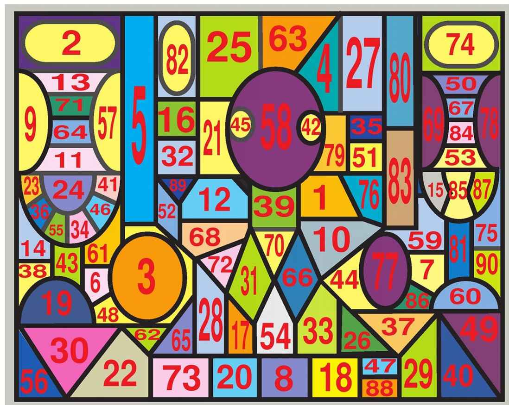
两个让人惊讶的视觉测验也许能够揭示你的潜意识运转与解决问题的方式。在这个测试里，你只需要从数字1数到90。
数数是人类最古老的数学行为，也是人类设想出的最有力、最基本的观念。
每个自然数后面都会跟着一个自然数。这个观点极大地推动了数学的发展。
本页和下一页的测验会让数数变成全新的挑战。这两个测验的目的只是要了解你连续寻找从1到90所需要的时间而已，而且只能通过观察的方式，不能跳过任何一个（连续的）数字，同时，在寻找下一个数字的时候，不能在纸上做任何记号。
要想完成这两个测验，你必须首先找到1，接着找到2，3，4，一直找到90。
当然，作弊的行为是不允许的。相信我，作弊只会破坏其中的乐趣。
重复这两个测验两三次，记下你每次数数需要几分钟，然后填在下一页的表格里。
你会惊讶地发现，测验所需要的时间远超你的预期。你还会发现，当你重复测验时，你需要的时间会越来越少。不过，第二个测验的结果可能更令人惊讶。
有趣的数数——测试二
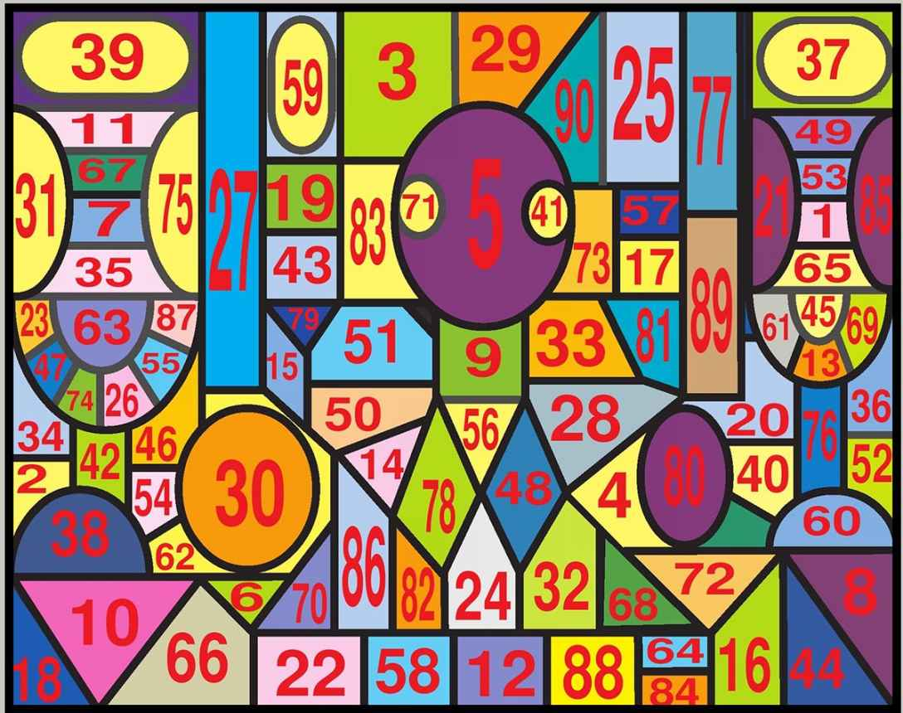
重复这两个测验两三次，将你每次所需要的时间记录在右边的表格里。
你可能会惊讶地发现，在做测验二的时候，你所需要的时间已经比做测验一的时间少了许多。
如果这种情况出现的话，你能解释其原因吗？
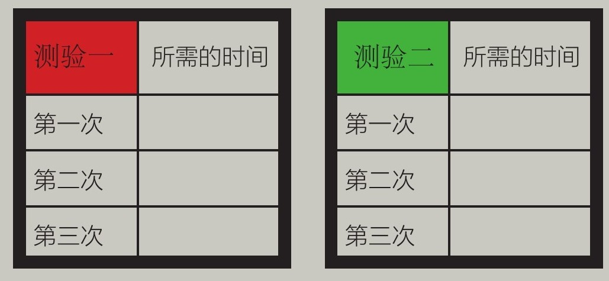
谜题与你的大脑
谜题不只是打发时间的消遣
解答各种不同类型的谜题能够改善脑功能，防止心智衰退以及老龄化疾病。大脑是一个极其复杂的机器，一刻不停地在超过一千亿个脑细胞中创建与巩固联结。通过诸如解答谜题的方式锻炼大脑，有助于脑细胞形成新的联结，提高大脑功能。大脑细胞之间的联系，每个神经元对与它相连的一万个其他神经元发出化学信号，就形成了我们称之为记忆的东西。记忆恢复与处理新信息的能力都与大脑的健康状况息息相关。解答谜题可以通过增强脑细胞之间的联结来增强这些重要的大脑功能。解答问题的过程，能够让脑细胞巩固旧联结，形成新联结。
用进废退
如果你不给大脑足够的锻炼，大脑就会逐渐退化。随着年龄增长，通过解答各种问题或谜题来保持大脑的健康，这点很重要。
各种问题与谜题都可以简单地归结为需要洞察力的问题以及那些需要更系统的分析才能解决的问题。洞察力重要还是分析能力重要呢？与绝大多数类似的争论一样，似乎两者都非常重要。在两种状态中切换的能力是非常重要的。当你想要解决一个既需要深层次分析又需要跳出常规视角的洞察力的问题时（很多谜题都需要这种能力），两种方式的结合会让你的大脑更灵活，也更健康。
当下，脑科学家提出了一个问题，那就是解答谜题是否有助于延缓老年痴呆症以及其他衰老退化症状的出现。老年痴呆症是一种脑部疾病，会让病人渐渐失去记忆以及其他思维能力。
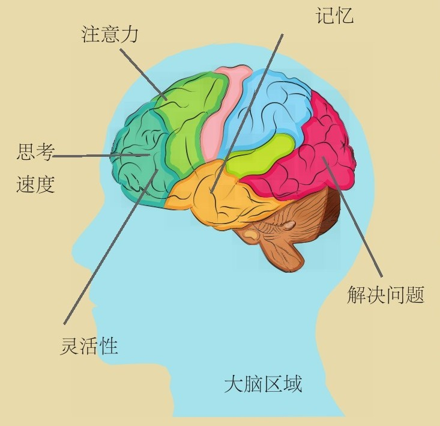
这种疾病也是造成老年人记忆力严重退化的首要原因。一般来说，对年龄在60岁以下的老人来说，这种疾病的发病率是相当低的，但60岁之后就会越来越普遍。就在不久前，记忆严重退化的老人还会被称为“老糊涂”，但现在人们已经认识到这很可能是因为老年人患上了老年痴呆症。
作为一种脑部疾病，老年痴呆症的广泛出现，就提出了这样一个问题，那就是解答谜题等活动是否有助于预防这种疾病呢？很多研究都坚称，解答谜题有助于预防大脑的退化。世界各地的许多机构都将解谜纳入了预防老年痴呆症的策略。
游戏本能
但是，阐述谜题与大脑健康之间关系的著作还不是很多。在一些持批判眼光的人看来，这两者并没有建立起一种明确的关系。若是单纯重复地解答某一类谜题，正如大多数人的做法一样，并不能为大脑提供多样性的选择。大脑似乎需要很多种不同类型的刺激才能保持运转。

因此，在解谜的过程中，一定要注重谜题的多样性。
人们会说，相比于一般性的谜题，某些类型的谜题能激活更多的大脑区域。这似乎是一种符合逻辑的推定，但还需要更多的研究结果加以证实。
多伦多大学的马塞尔·达内西教授进行的多项研究表明，我们每个人都有不同的谜题类型偏好和解题技能。一些人可能只喜欢纵横字谜，另外一些人则只喜欢逻辑游戏（比如数独），也有一些人喜欢两者的混合。在达内西教授所进行的一些实验里，他们将那些被归为“不受欢迎”类的谜题分发给学生们去解答。八个月之后，相当多的学生（大约占到74%）表示，他们开始喜欢这种他们曾经不喜欢的谜题类型了。只是通过解答谜题，我们的这种“游戏本能”似乎就会开始发挥作用，让我们能够享受所有类型的游戏了。
谜题ABC
接下来，我将会从我收藏的5000个谜题中随机挑选出24个经典谜题，帮你们热热身。这些谜题并不是很难，也不需要你们事先掌握什么数学知识。这些谜题清晰地表明谜题的多样性，囊括了许多数学、逻辑和基本原则。
蜗牛爬窗
一只小蜗牛沿着90厘米高的窗户爬行。如果这只蜗牛白天爬行11厘米，晚上倒退6厘米，那么这只小蜗牛要连续爬行多少天才能爬到窗户顶部呢？
总数为100
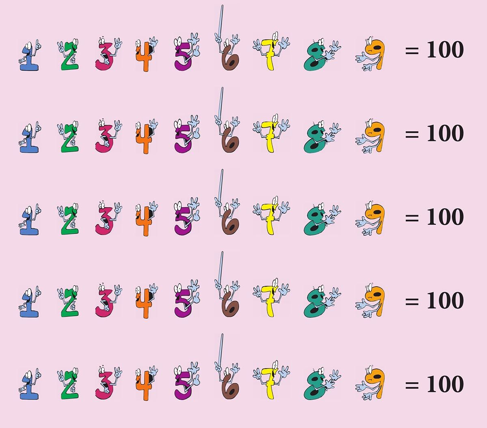
一个古老经典的算术问题是这样的：从1到9的连续数，在它们之间插入相应的数学符号，使运算结果为100。这个问题可以有无数种变化，其中就包括只使用加减符号的。马丁·加德纳就演示过如何用最多的加号和最少的减号来解答这个问题。
你能够在上述的等式里只使用加减符号来解答这个问题吗？
提示：两个连续的数将会形成一个两位数。如果允许不止一个两位数，或不止使用加减符号，还会有其他解法。你能想到多少种解题方法？
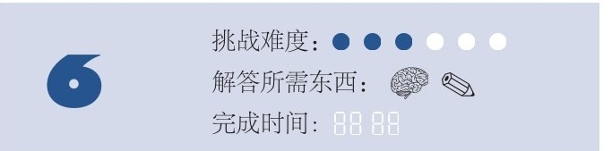
隐藏的正多边形与星形
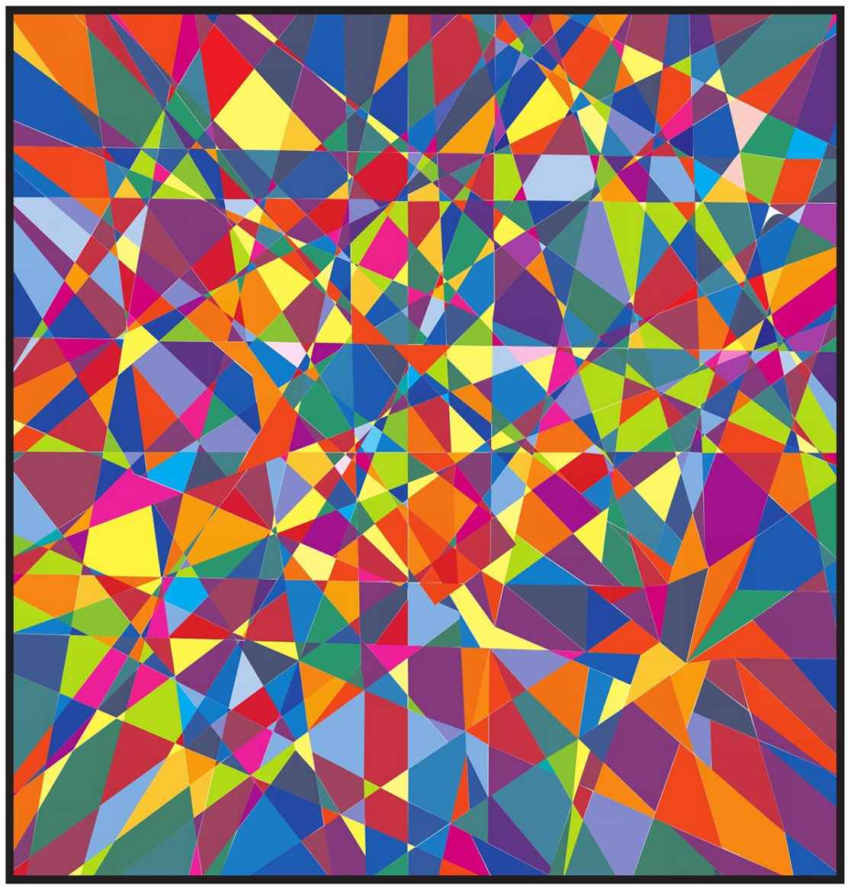
你需要花费多少时间才能找到七个正多边形与一个正十角星呢？
电线上的小鸟
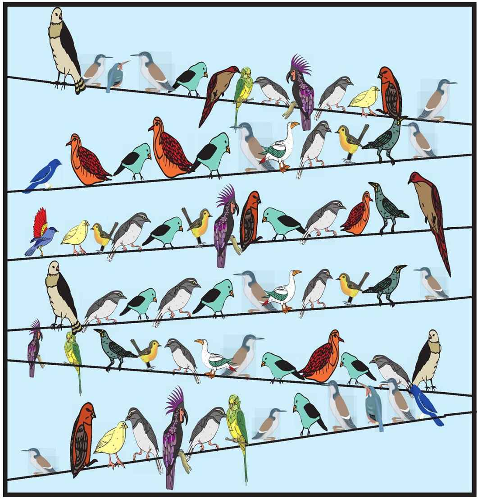
想象在一根很长的电线上站着许多小鸟，这些小鸟都是随机分布的，正对或背对着它旁边的小鸟。如果这根电线无限长的话，你猜有多少只小鸟能被一只小鸟、两只小鸟看到或不被任何一只小鸟看到？在上图的例子里，只有72只小鸟随机分布在电线上，因此，你的猜测会是一个近似值。
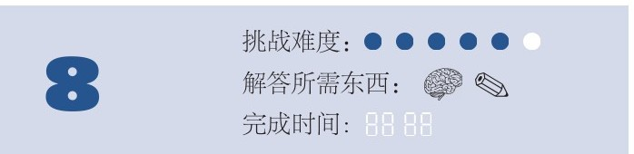
立方体叠合
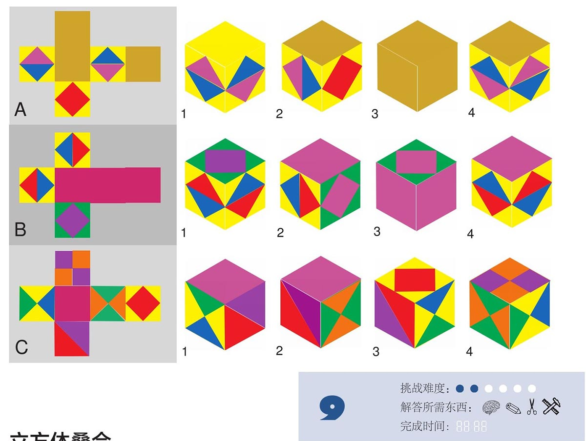
左边是立方体的三种展开。在它们的右边是立方体的四个等距投影图。这题的目标就是，找寻与每种展开的立方体相匹配的等距投影图。
三角形里的三个角
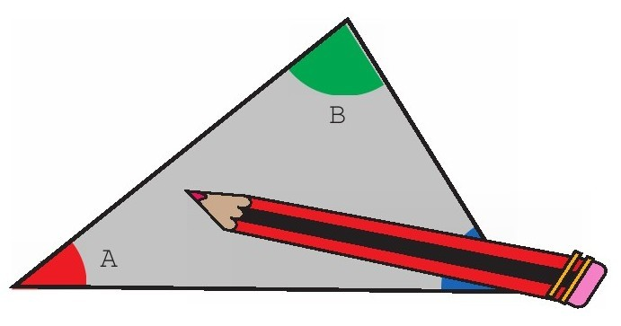
欧几里得证明了三角形中三个内角之和为平角（180°）。数学的美感就在于，在很多情况下，即便是业余爱好者，只要具有一定的洞察力也能有全新的发现，并且找出新的证据。
斯坦福大学的数学家路德·华盛顿，在他还是学生的时候，就想到了用一种相当简单的方法——只用一支铅笔就能加以证明。你能想出他是怎么做到的吗？
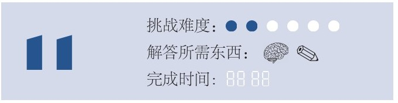
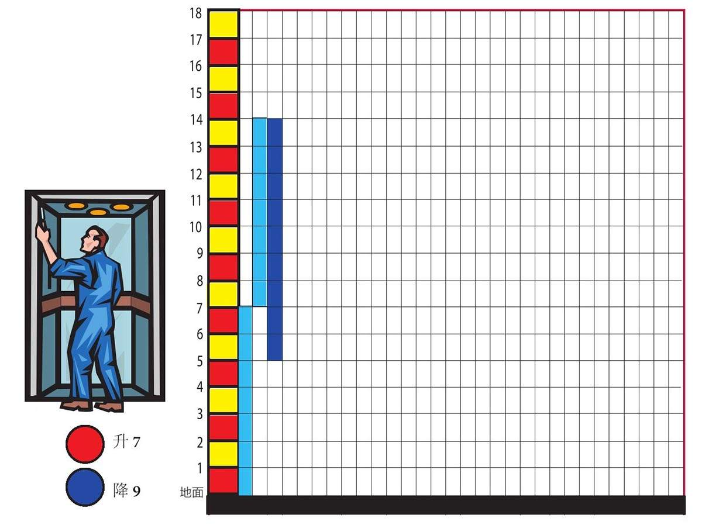
电梯的升与降
在一栋18层的建筑里，有一个奇怪的电梯，该电梯只有两个按键：一个“升”键，一个“降”键。按一次“升”键，你将会上升7层（如果你所处的楼层超过了11层，那么按下“升”键，电梯就不会动）；要是按一次“降”键，电梯会直接下降9层（如果你所处的楼层低于9层，那么电梯也不会动）。你是否有可能乘坐电梯到自己想要到的任何楼层呢？电梯修理人员需要按多少次按键，才能从地面到达其他楼层呢？他将按什么顺序到达这些楼层呢？如图已经列举了前三步。
围墙
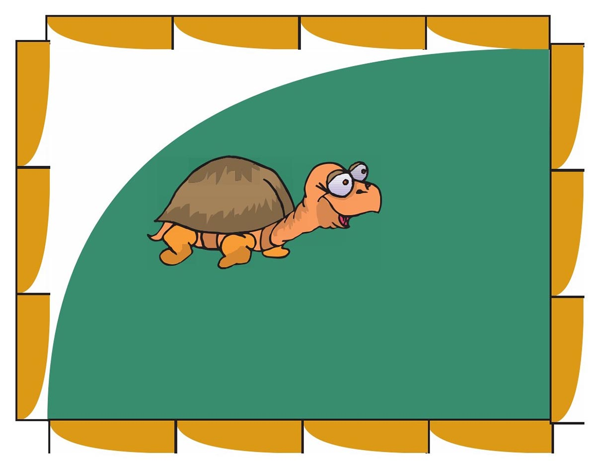
蒂姆找到了14块砖头，在花园里为他的新宠物小乌龟建造一个围墙。他的小乌龟不断长大，蒂姆想用这14块砖头尽可能地拓展围墙的面积。他该怎么做呢？
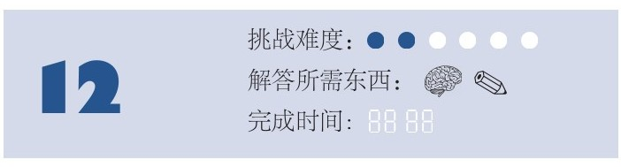
操场
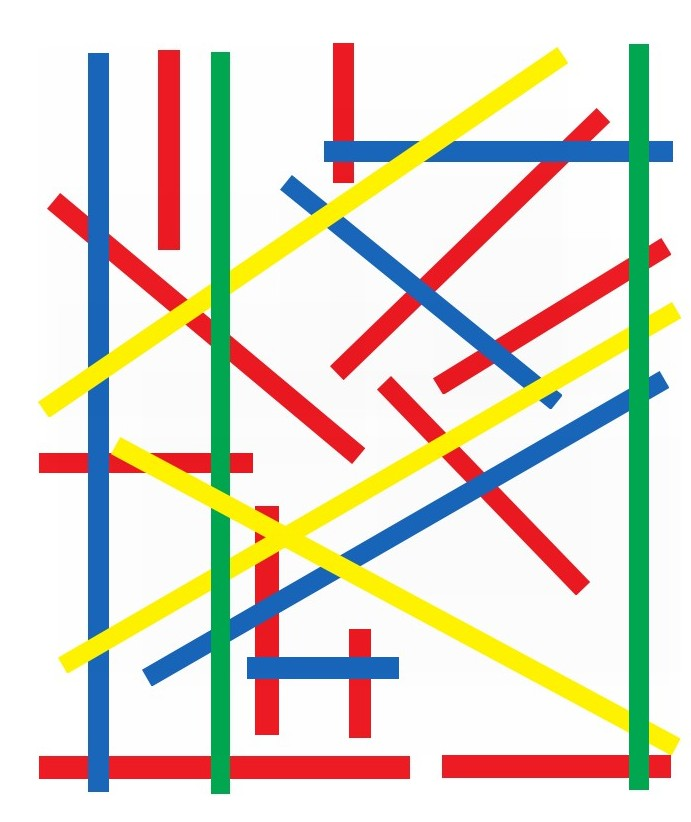
你正在俯瞰一座操场，操场上堆积着许多厚木板。你能认清哪个才是最高点吗？
填空
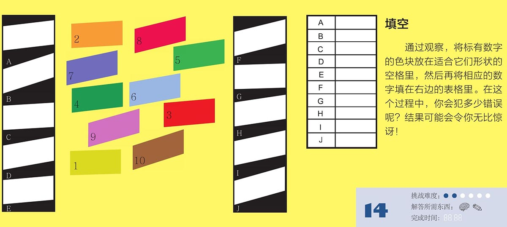
通过观察，将标有数字的色块放在适合它们形状的空格里，然后再将相应的数字填在右边的表格里。在这个过程中，你会犯多少错误呢？结果可能会令你无比惊讶！
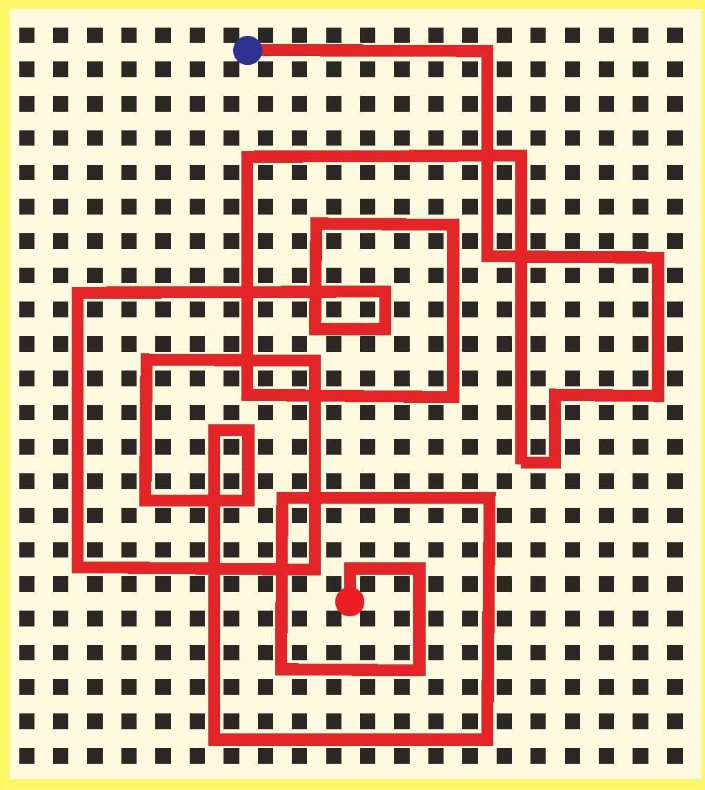
鼹鼠走路
一只鼹鼠从红点出发，红线显示的是鼹鼠所走的路线，它最后停留在蓝点上。你能想出鼹鼠在行进过程中每次改变路线时所遵循的逻辑吗？
线条追踪
若是只通过观察，你能追踪到多少条线？要完成这个挑战，你需要长时间保持稳定的专注力。
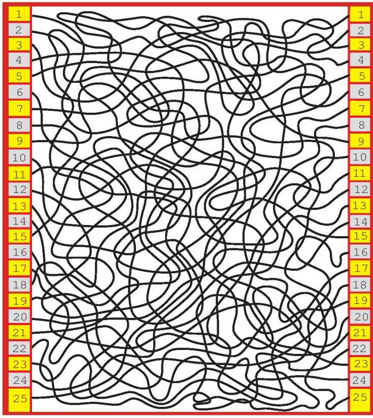
管道
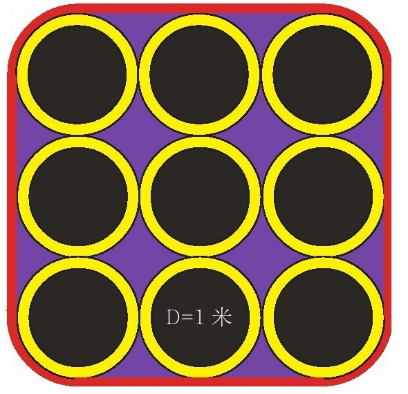
一条红色的金属环将九根管道紧紧地套在一起。那么，红色的金属环有多长呢？
甜品
蛋糕与冰激凌一共花费2.5美元，但是蛋糕的价格要比冰激凌的价格贵1美元。请问，蛋糕与冰激凌的价格分别是多少呢？
思维的模式
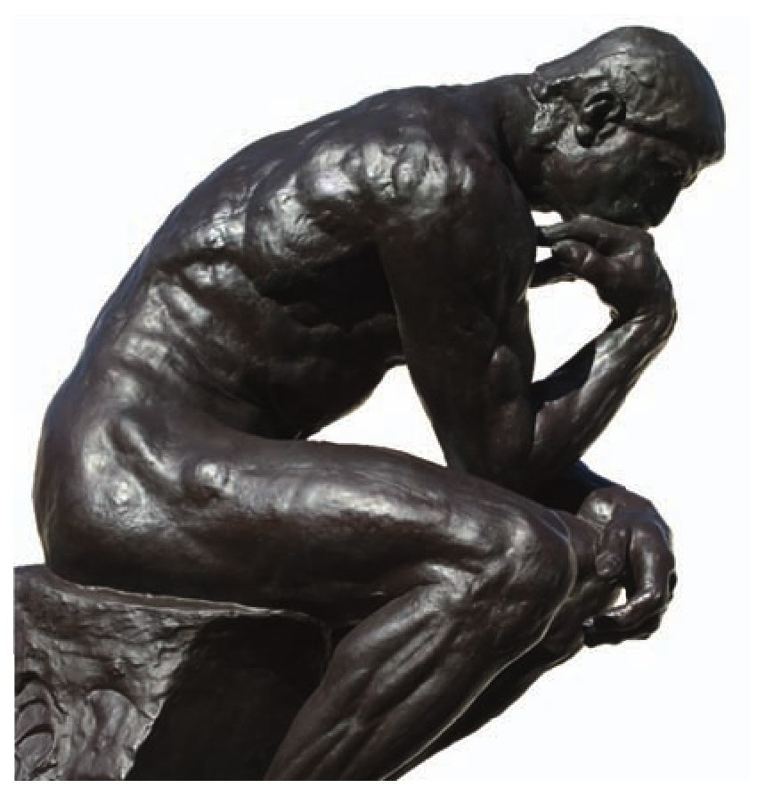
古希腊语“deiknymi”，即“思维实验”，是数学证明的最古老模式。思维实验就是运用想象的观点去研究未知事物的性质，这与解答谜语是很类似的。思维实验通常包括对一个假设的场景进行视觉化的实验，在脑海里对正在发生的事情进行实验与概念化的处理。
思维实验背后的思想与简单推理是这样的：仅仅通过思考，我们就能发现世上的新事物，这也是人类早期对哲学感兴趣的原因。很多著名的思维实验对于推动数学与科学发展都起到了重要的作用。比如，爱因斯坦的电梯、牛顿的苹果、薛定谔的猫、麦克斯韦的魔鬼、牛顿的卫星原理、伽利略的球体实验等等。
无限的宇宙
在早期的思维实验里，最简洁和优雅的一个思维实验就是“无限的宇宙”，是由阿契塔与伊壁鸠鲁提出来的。阿契塔认为，宇宙是无限的，没有边界。在他的思维实验里，他假设某人站在宇宙的边缘，然后将他的手伸出这个宇宙的边界，那就说明此人所处的位置依然不是宇宙的尽头。一百年后伊壁鸠鲁也提出了类似的思维实验：他假设一支箭在宇宙空间内不断飞行，没有遇到任何阻碍，证明宇宙是无限的。而如果这支箭在宇宙的尽头遇到了一个类似于墙体的障碍物，那么这支箭就会反弹回来，这也能证明宇宙是无限的。因为在这堵墙的背后，肯定还存在着某些东西。
阿契塔与伊壁鸠鲁的思维实验，在1888年出土的弗拉马里翁雕刻上得到美丽而直观的呈现。人们认为这尊雕像是在16世纪的时候被创作出来的。
柏拉图与亚里士多德都不接受“宇宙是无限的”这样的观点，因为他们很难接受无限这个概念。直到中世纪，亚里士多德的宇宙学说都是被广泛认可的，人们都认为宇宙是有限的，有一个确定的边界。
伊壁鸠鲁（公元前341—前270年）
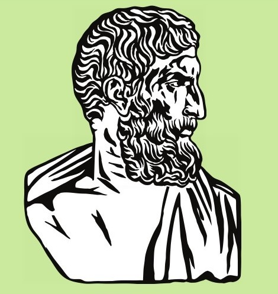
伊壁鸠鲁的哲学就是让每个人都过上幸福快乐的生活，尽可能地离苦得乐。按照他的说法，实现这个目标的最好方法，就是要做到无欲无求。伊壁鸠鲁的哲学思想对早期的基督教产生了重要的影响。他的“无限的宇宙”的思想实验是极具美感的，也是非常经典的。
阿契塔（公元前428—前347年）
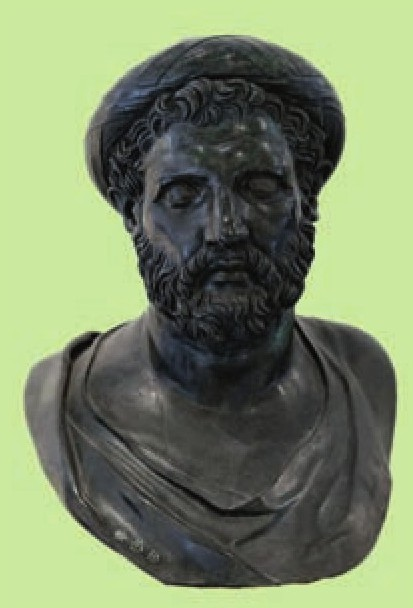
阿契塔是古希腊数学家，也是毕达哥拉斯学派的科学家，数学力学的创立者之一。在他的诸多成就当中，其中有一项就是他制作了一只木质的鸽子，这是人类历史上最早的自驱动飞行装置（可能是蒸气驱动的）。据说，该木质的鸽子能够飞行200米左右。
大甩卖
一位女销售员在一次大甩卖的活动中以每套1200美元的价格卖出了两套沙发。第一套获利25%，第二套则损失了20%。她想当然地认为自己依然从这种组合销售中盈利了。她的这种想法是正确的吗？
座位安排
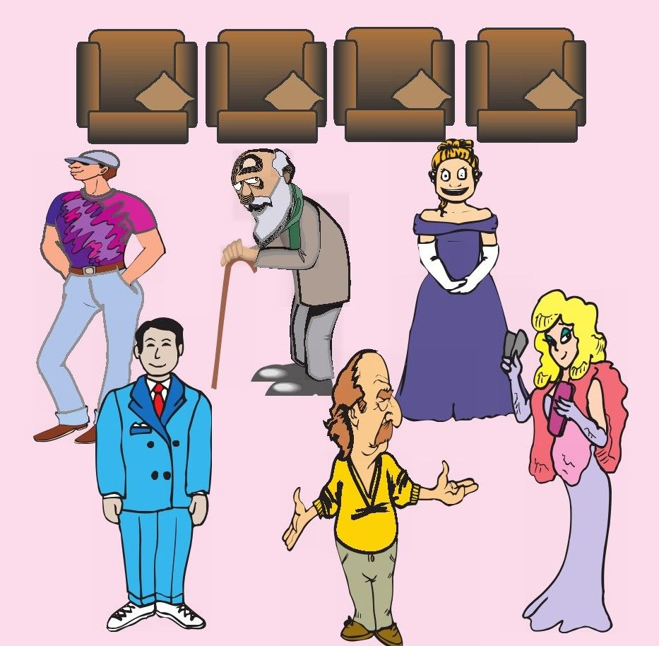
有四张椅子排成一排，你有多少种不同的方法能让两位女性不会挨着坐？假设椅子的数量为n时，你能找到此类问题的通解吗？
等边三角形里的正方形
三个面积相等的正方形将一个等边三角形剖分为22个部分。若是允许你用另外三个面积相等的正方形去做，你能做得更好吗？[shu籍 分.享 V信jnztxy]
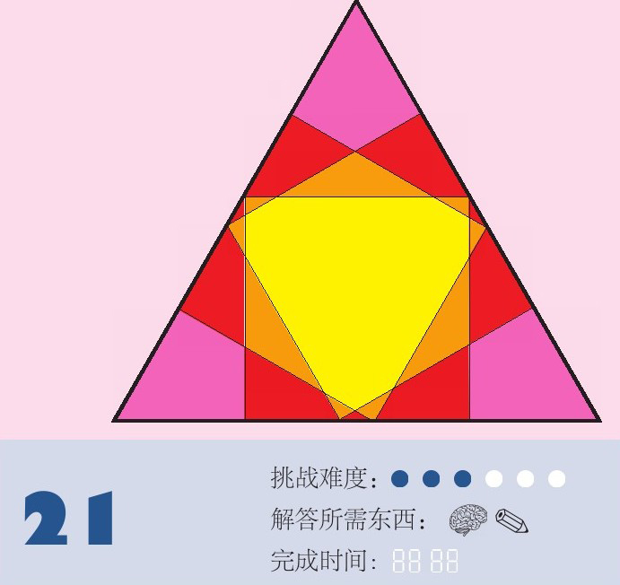
穿过16个点的线
我们需要画出6条直线，才能连续穿过16个点。你能找到多少种画法，使交点数量最少？你能找到多少种形成对称图形的解法呢？
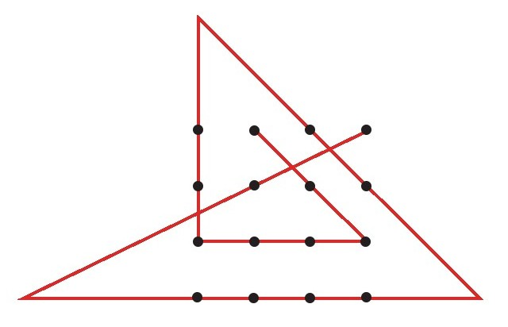
由三角形组成的多边形
画出一个有任意边的多边形，在每个角上点一个带有颜色的点，然后在多边形的内部画上任意数量的点。接着，将这些点作为一个个的角，将这个多边形划分为没有重叠的三角形，然后用红色、蓝色与黄色去标记三角形的三个角，我们会得到如图右边所示的十种不同类型的三角形。
一个三角形的三个顶点都带有不同的颜色，这就是所谓的完全三角形。
在我所列举的例子里，我只是在三角形的边界点上标记颜色。你能对多边形内部的点进行颜色标记，创造出两个完全三角形吗？
在既有的边界分布的情况下，你可以按照自己的想法，重新分割这个多边形吗？
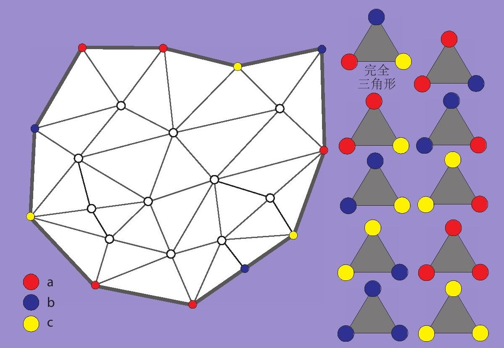
摇骰子
相互独立事件是指一次只能出现其中一种结果。在这种情况下，摇到任意一个数字的概率等于摇到每个数字的概率之和。要想摇出数字“4”，其概率为1/6。同理，摇出数字“6”的概率也是1/6。既然这样，在任意一次摇骰子的过程中，摇出数字“4”或是数字“6”的概率又是多少呢？
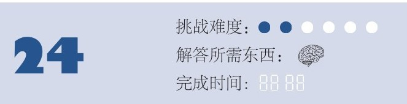
俯视图
一座建筑物的俯视图如图所示。你能单纯从观看这座建筑的楼顶，去想象它的三维空间形态吗？
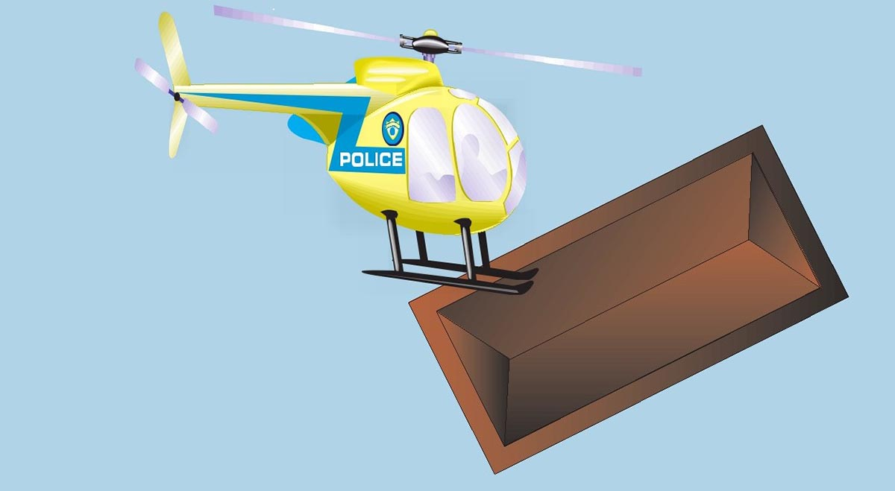
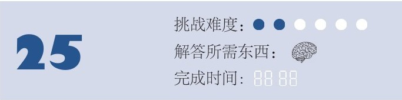
有多少个正方形？（一）
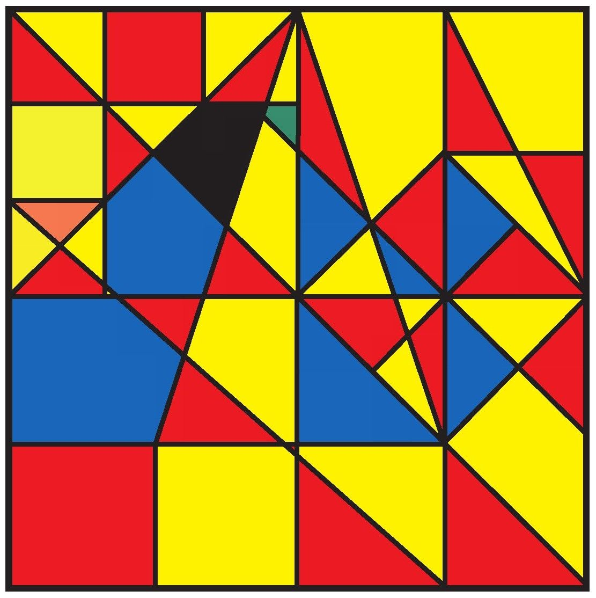
消遣数学谜题有一类，专门探讨“数量多少”的问题，其中就包括“有多少个正方形？”这样的问题。
观察这三个图案，你能数出多少个不同形状的正方形呢？
第三个图案是很具美感的，这是克利夫·匹克欧弗（Cliff Pickover）创造出来的，他在向解谜的人发出挑战，因为他的同事给出的答案都不一样。你能给出相应的证明，最终解答这个问题吗？
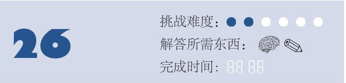
有多少个正方形？（二）
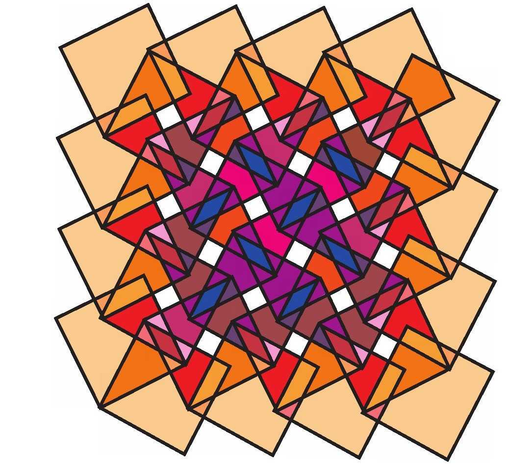
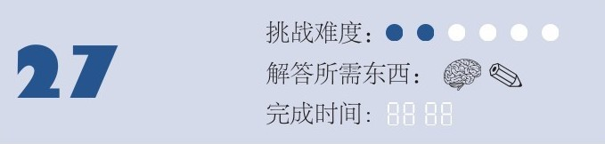
有多少个正方形？（三）
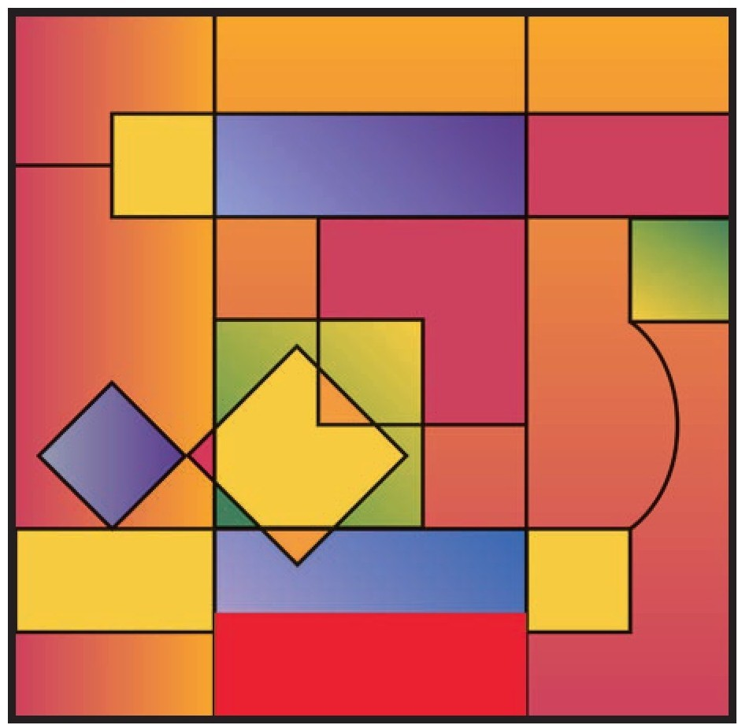
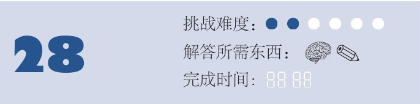